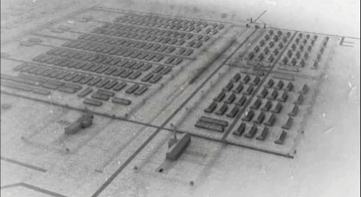
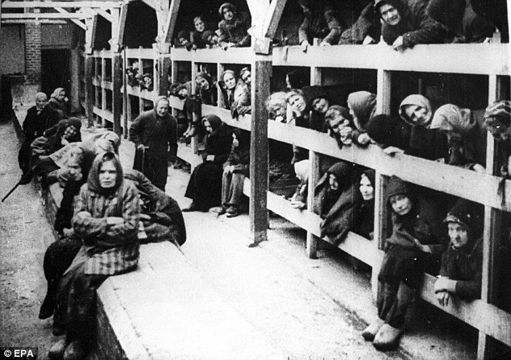
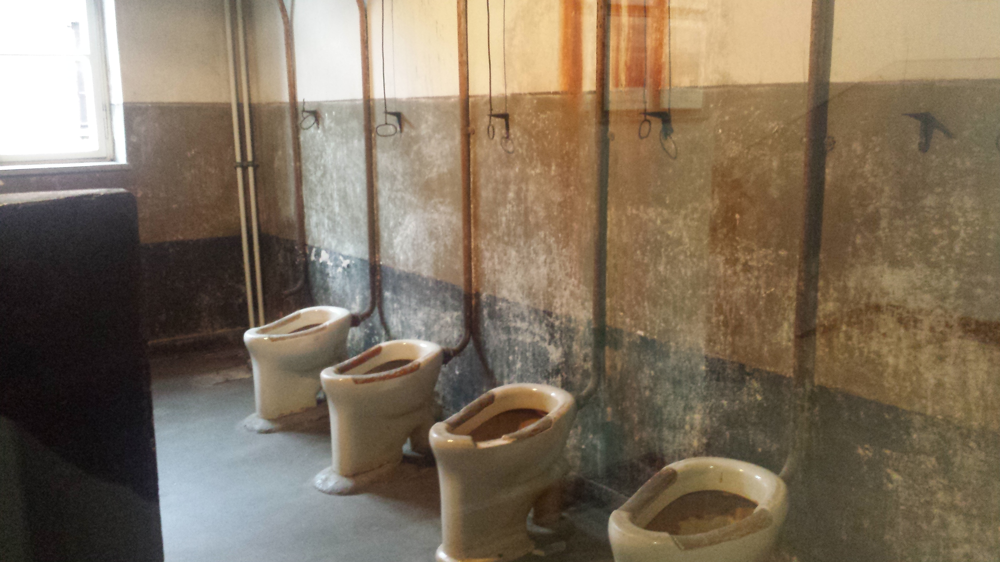
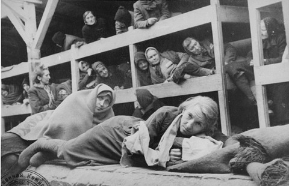
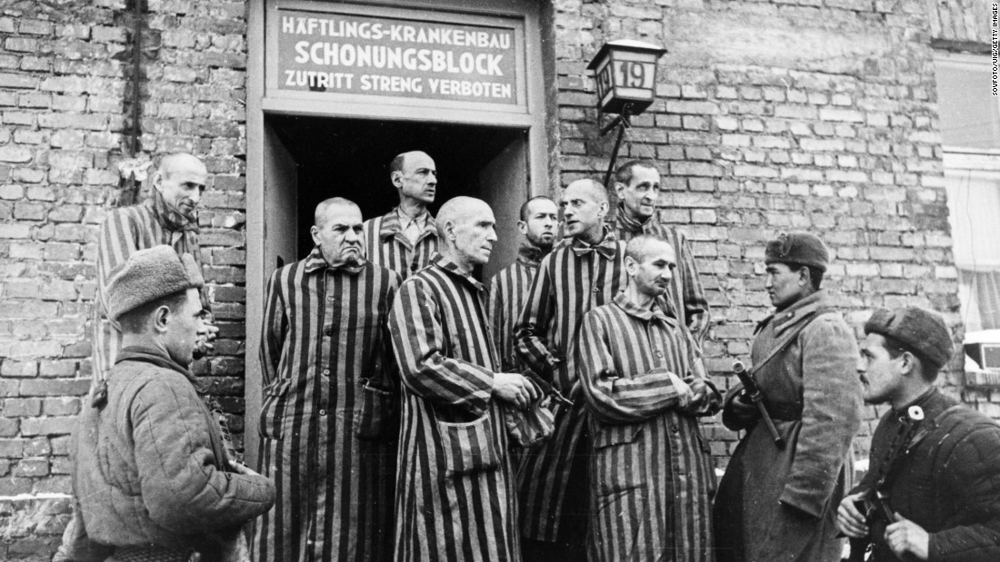
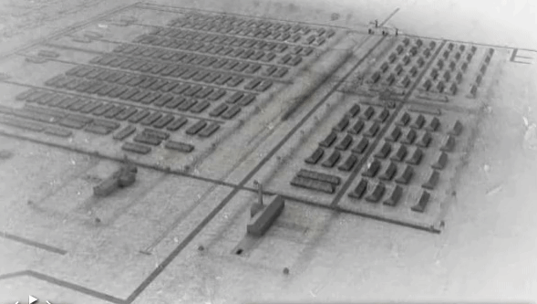
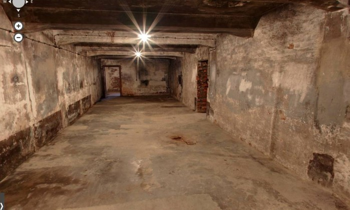

Holocausto
O horror em Auschwitz
Maior campo de concentração nazista, Auschwitz tornou-se o principal símobolo do genocídio na II Guerra Mundial.
Estima-se que entre 1 milhão e 1,5 milhão de pessoas morreram em quase cinco anos de operação dos três campos principais e 39 campos auxiliares do complexo de extermínio de 40 quilômetros quadrados, construídos pelos alemães em 1940, na periferia de Oswiecim, na Polônia.
O maior dos campos de concentração era Auschwitz II, também conhecido como Birkenau. Inaugurado em 1942, com capacidade para 125 mil prisioneiros, sua principal funcionalidade era o extermínio de judeus.

Os alojamentos
Condições de vida
Os prisioneiros de Auschwitz viviam em rústicos pavilhões de alvenaria ou madeira. O primeiro desafio da dura adaptação ao campos de concentração era se adaptar ao frio, à umidade e à superlotação dos alojamentos. Em geral, as construções tinham capacidade para 700 pessoas, mas na prática abrigavam cerca de 1,2 mil priosioneiros.
Os presos se amontoavam em treliches. Em parte dos alojamentos, não havia sequer camas - Os prisioneiros deitavam sobre colchões de palha no chão.
As instalações sanitárias eram outro problema. Nem todos os pavilhões contavam com banheiros, e onde havia o números era insuficiente para tantos prisioneiros. Para beber água, os prisioneiros recorriam a poços, alguns próximos das latrinas.
Infestados de piolhos e ratos, os pavilhões eram fertéis para a proliferação de doenças contagiosas. As oportunidades para banho eram limitadas. Dependendo do setor, era necessários despir-se dentro do pavilhão e se dirigir nu a outro barracão com chuveiros. Para muitos prisioneiros, essa caminhada em dias frios e chuvosos significava uma porta aberta para doenças e a morte.
Alimentação
Os prisioneiros recebiam três rações de comida por dia, que não supriam as mínimas necessidades nutricionais. Pela manhã, era servido apenas café ou chá. No almoço, a refeição consistia de sopa, geralmente a base de batatas.
A combinação da pobre alimentação com o trabalho pesado no campo levava à degradação física. Se não provocasse a morte, por si só, entre os mais debilitados, a desnutrição seria um dos principais fatores de seleção para as câmaras de gás.
O trabalho no campo
O dia de trabalho escravo em Auschwitz começava cedo: às 4h30 no verão e às 5h30 no inverno. Após levantarem ao som de sirene e beberem café ou chá, os prisioneiros deixavam o pavilhão para contagem - o procedimento era penoso em dias de mau tempo. Divididos em grupo, enfrentavam jornadas de trabalho forçado por, pelo menos 11 horas - esse período era ampliado no verão.
Além de serviços de manutenção do campo de concentração, os prisioneiros trabalhavam na construção de prédios do complexo e de estradas. Eram especialmente úteis à máquina de guerra alemã, que contava com seus serviços para a produção de carvão, borracha sintética e armamentos.
Câmaras de Gás
Como a fábrica da morte funcionava
Em 1942, os alemẽs deram início à construção de quatro grandes câmaras de gás e crematórios. As câmaras de gás do crematório 2 e 3, assim com as salas de despir, eram subterrâneas, enquanto as instalações dos crematórios 4 e 5 estavam no nível do solo. As câmaras da morte entraram em operação entre março de 1942 e junho de 1943.
Os prisioneiros eram transportados para Birkenau em trens de carga, em desgastantes viagens que duravam dias. Na chegada, eram submetidos a uma avaliação médica. Os considerados aptos ao trabalho eram registrados e levados a pavilhões de quarentena. Após essa seleção, engrossavam as fileiras de trabalho forçado no próprio campo ou eram enviados a outros campos de concentração.
Os "incapacitados" - doentes, velhos e crianças - eram conduzidos às câmaras de gás. Alguns prisioneiros eram mortos por injeção letal ou executados por membros da SS. Outros, escolhidos como cobaias para experimentos médicos
Cedo ou tarde, as câmaras de gás tornavam-se o destino da maioria dos prisioneiros. Quando deixavam de apresentar condições físicas para suportar uma jornada de trabalho de 11 horas, no mínimo, os prisioneiros "capacitados" também acabavam mortos.
Observe essas imagens do campo de concentração de Auschwitz-Birkenau, como é hoje - 70 anos depois que ele foi libertado pelas tropas soviéticas. O acampamento na Polônia é agora mantido como Patrimônio Mundial e é visitado por milhares de turistas e sobreviventes a cada ano: